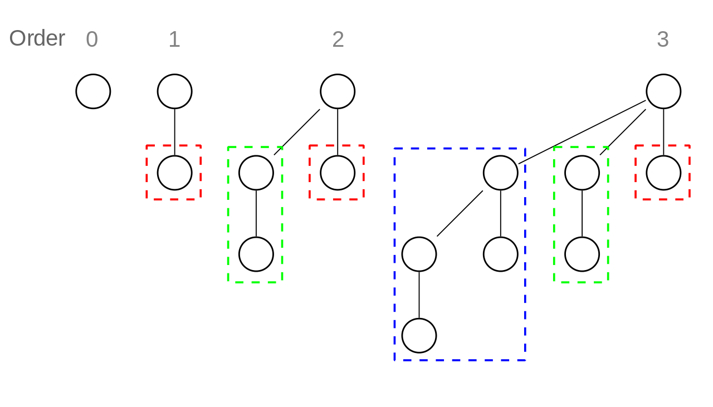

binomial heap
I’ve been making a very slow progressein reading Okasaki’s book on purely functional data structures, and I came across a particularly beautiful discussion on binomial heaps. Let me explain.
heap
We often are interested in acquiring the minimum or maximum value in our collection of values, and heap is often our choice for supporting this type of behavior. Heaps are most commonly implemented as heap-ordered binary tree - a type of tree by which the element at each node is no larger/smaller than the elements of its children. In this way, the minimum/maximum element is always at the root of the tree.
binomial heap
Perhaps less common implementation of heap (at least an implementation that was very novel to me) is the binomial heap. According to Okasaki, using binomial heap instead of the binary heap allows insert and merge to be run in O(1) time (!). Implementation of binomial heap is slightly more complex but a very intriguing one - we get to toy with some new structures and discover some beautiful tricks it can perform.
binomial tree
[1]
![[1]](http://en.wikipedia.org/wiki/Binomial_heap#mediaviewer/File:Binomial_Trees.svg){kind=link}
Binomial trees can be inductively defined with the following two rules:
- A binomial tree of rank 0 is a single node (as seen from above picture)
- A binomial tree of rank r+1 is formed by linking two binomial tree of rank r, making one tree the leftmost child of the other.
Let’ that digest for a while. The above diagram really doesn’t help you understand rule (2), but it does gives clues for defining a second, equivalent definition of binomial trees - a binomial tree of rankr r is a node with r children, t1..tr, where each ti is a binomial tree of rank r-i. [2]
One interesting thing to note about a binomial tree is that a tree with rank r has exactly 2^r number of nodes. We can easily verify this (by proof if you really want to. I would suggest proof by induction using either defnition).
Let’s define this in haskell. For each node in a binomial tree, we will keep (1) rank, (2) its element, and (3) a list of children (which, as we noted in our secondary defnition will comprise r binary tree).
data BTree a = BNode Integer a [BTree a]For our list of children, let’s enforce a rule to have it’s elements stored in decreasing order of rank while the elements themselves are stored in heap order. We can accomplish the latter by carefully defining our own link function to link trees with larger roots under trees with smaller roots. Remember that link function should only be called with two binomial tree with the same rank.
link :: (Ord a) => BTree a -> BTree a -> BTree a
link t1@(BNode r x1 c1) t2@(BNode _ x2 c2)
| x1 < x2 = BNode (r+1) x1 (t2:c1)
| otherwise = BNode (r+2) x2 (t1:c1)back to binomial heap
We define binomial tree as a collection of heap-ordered binomial tree where no two tree in our collection has a same rank. We will maintain our list of binomial tree as a list with increasing order of rank.
BHeap a = [BTree a]At first, this seems to be a very strange definition for a heap. After all, isn’t heap suppose be a collection of some elements?
In fact, that what exactly BHeap offers, albeit unconventionally. A really nice way to think about our list of binomial tree is to think of binary numbers. Recall that a binomial tree with rank r has exactly 2^r nodes. And say our binomial heap contains a list of binary trees with rank 0, 1, and 2. How many elements does this translate to for our binomial heap?
Simple calculation yields the following answer:
rank 0 + rank 1 + rank 2
=> 2^0 + 2^1 + 2^2
=> 1 + 2 + 4
=> 7
=> 0x111As Okasaki puts it [2]:
Because each binomial tree contains 2^r elements and no two trees have the same rank, the trees in a binomial heap of size n corresponds exactly to the ones in the binary representation of n. For example, the binary representation of 21 is 10101, so a binomial heap of size 21 would contain one tree of rank 0, 2, and 4.
This is an unusual way to keep scores of your element, but a very workable one. With this implementation, it’s not very difficult to write insert, merge, and deleteMin to serve as a heap.
rank :: BTree a -> Integer
rank (BNode r _ _) = r
insTree :: (Ord a) => BTree a -> [BTree a] -> [BTree a]
insTree t [] = [t]
insTree t ts@(t':ts')
| rank t < rank t' = t:ts
| otherwise = insTree (link t t') ts
insert :: (Ord a) => a -> [BTree a] -> [BTree a]
insert x ts = insTree (BNode 0 x []) tsAt first glance, insTree might appeae incomplete - for instance what if rank of t is greater than rank of t'? Formerly, we said thatlink should only be called for trees with same rank - wouldn’t insTree violate the usage of link?
However, keep in mind that insTree is a internal helper function - it is only used by insert (and merge as we’ll see soon). By design, we will not be abusing insTree - our list of BTree is arranged in order of increasing rank, and because we start with a singleton with rank 0 (the lowest rank possible) and rank can be incremented at most by one, we cannot have a case where rank of t is greater than the rank of t'. (you can probably prove this by induction again)
The worst case for our insert function is to insert into a heap of size n = 2^k - 1 (in binary - 1111..111) requiring call to link k times. Therefore the worst case runtime for insert is O(k) => O(log n).
To merge two heaps together, we will go through two list of BTrees and link the trees with equal ranks as we go. (this is somewhat reminiscent of binary arithmetic)
merge :: (Ord a) => [BTree a] -> [BTree a] -> [BTree a]
merge ts1 [] = ts1
merge [] ts2 = ts2
merge ts1@(t1:ts1') ts2@(t2:ts2')
| rank t1 < rank t2 = t1:(merge ts1' ts2)
| rank t2 < rank t1 = t2:(merge ts1 ts2')
| otherwise = insTree (link t1 t2) (merge ts1' ts2')Now let’s move on to the meat of heap interface - findMin and deleteMin. Okasaki suggests defining an auxiliary function removeMinTree that finds the binomial tree with the minimum root value and removes it from the list.
root :: BTree a -> a
root (BNode _ x1 _) = x1
removeMinTree :: (Ord a) => [BTree a] => (BTree a, [BTree a])
removeMinTree [t] = (t, [])
removeMinTree (t:ts) =
if (root t) < (root t') then (t, ts) else (t', t:ts')
where (t', ts') = removeMinTree tsIt looks tricky, but the code itself is very straightforward. The key is to remember that we always create binomial trees with link function and that our implementation of link always maintains the smallest element of a given binomial tree at its root.
With this, findMin becomes a one liner:
findMin :: (Ord a) => [BTree a] -> a
findMin ts = root t where (t, _) = removeMinTree tsdeleteMin is a bit more involved. By removing the root of a binomial tree, we are left with a headless tree. But recall the headless binomial tree of rank r is simply a collection of heap-ordered binomial tress of rank 0 to r-1. By reversing this collection (we collect binomial trees in a decreasing order), we get a list of binomial trees in increasing rank - also known as binomial heap!
deleteMin :: (Ord a) => [BTree a] -> [BTree a]
deleteMin ts = merge (reverse ts1) ts2
where ((BNode _ x ts1), ts2) = removeMinTree tsreferences
[1] Wikipedia. Binomial Heap
[2] Okasaki. Purely Functional Data Structure
end of message